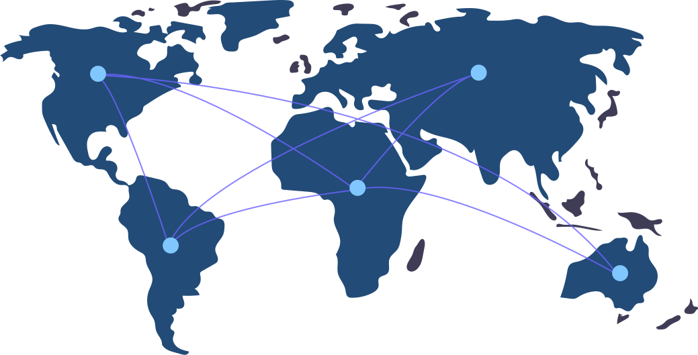

<div class="flex flex-col w-screen h-screen">
  <h2
    class="pt-[5vh] pb-10 text-9xl md:pt-[10vh] md:text-7xl font-extrabold text-sky-600 w-full flex justify-center xl:hidden"
  >
    fbook
  </h2>
  <div class="flex w-full h-full">
    <div
      class="hidden items-start pt-8 pl-8 w-0 xl:w-1/2 xl:flex xl:flex-col h-full"
    >
      <h2 class="text-4xl font-extrabold text-sky-600">fbook</h2>
      
      <h4 class="text-lg text-zinc-400 font-semibold mt-14">
        Fbook helps you always stay connected with your
        <span class="relative mx-1">
          <span
            class="block absolute -inset-1 -skew-y-2 bg-gradient-to-r from-sky-300 to-blue-400"
            aria-hidden="true"
          ></span>
          <span class="relative text-white">friends</span>
        </span>
        around the world
      </h4>
    </div>
    <div
      class="flex items-start xl:items-center justify-center w-full xl:w-1/2 h-full"
    >
      <router-outlet></router-outlet>
    </div>
  </div>
</div>
